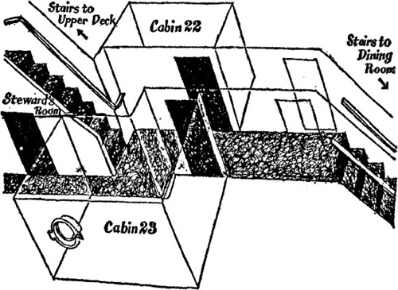

11
Listen to Part 1:

Salahadin tìm thấy Con mèo đen
Mười phút sau, có tiếng gõ cửa phòng của Salahadin. Đó là quản gia.
Người quản gia hỏi: "Ngài muốn ăn ở phòng ăn hay trong phòng riêng ạ?"
Salahadin hỏi: "Mọi người thường ăn ở đâu?"
Quản gia trả lời: "Ở phòng ăn ạ. Nhưng ngài muốn ăn trong phòng riêng cũng được ạ."
Salahadin nói: "Tôi nghĩ vậy cũng được. Tôi sẽ ăn ở đây."
Quản gia nói: "Vậy là tám giờ tôi sẽ mang bữa tối của ngài đến," rồi đi xuống hành lang.
Salahadin quan sát kỹ quản gia. Quản gia đi đến một căn phòng nhỏ dưới cầu thang.
Salahadin lấy sổ tay ra và vẽ sơ đồ hành lang và các phòng. Đây là sơ đồ đó:

Listen to Part 2:
Một lát sau, quản gia đi ra khỏi phòng và đi xuống hành lang. Salahadin đợi năm phút. Ở hành lang rất yên tĩnh. Salahadin ra khỏi phòng và lặng lẽ đi đến phòng quản gia dưới cầu thang.
Người quản gia đã quên khóa cửa. Salahadin từ từ mở cửa và nhìn vào trong. Căn phòng nhỏ, có bàn chải và đồ lau dọn. Trên tường có mấy cái móc. Mỗi móc có một chùm chìa khóa và mỗi chùm đều có một số phía trên.
Salahadin lấy chùm chìa khóa phòng 22 rồi đến cửa phòng. Bỗng nhiên nghe có tiếng động. Peterson đã trở lại. Hắn đang đứng trước cửa phòng của mình. Salahadin chờ trong phòng của quản gia. Peterson vào phòng và đóng cửa.
Salahadin lặng lẽ trở về phòng mình, ngồi xuống và lắng nghe. Có tiếng nhạc. Peterson đã bật đài. Rồi có tiếng nước chảy. Peterson đang tắm.
Salahadin cũng tắm, mặc quần áo và chờ đợi. Vài phút sau, có tiếng gõ cửa. Người quản gia mang bữa tối đến cho Salahadin. Cùng lúc đó, Peterson ra khỏi phòng. Hắn khóa cửa lại và đi xuống hành lang. Peterson đi vào phòng ăn.
Người quản gia đã đi và Salahadin ở một mình. Anh ta nhìn ra hành lang. Mọi thứ đều yên tĩnh. Salahadin ra khỏi phòng và đi sang hành lang bên kia. Anh ta tra chìa khóa vào ổ khóa phòng 22 và từ từ mở cửa. Rồi anh ta bước vào phòng và cẩn thận đóng cửa lại.
Salahadin nhìn quanh phòng. Có một chiếc vali trên tủ và một số quần áo trên giường. Nhưng anh ta không thấy chiếc hộp nào cả. Anh ta nhìn vào phòng tắm. Trong đó trống rỗng.
Salahadin nghĩ: Mèo đen phải ở đây chứ. Hắn đã giấu nó ở đâu nhỉ?
Rồi anh ta nảy ra một ý. Phòng tắm rất cao. Salahadin nhìn lên. Có một chiếc hộp được đặt trên vòi sen.
Listen to Part 3:
Salahadin nhấc chiếc hộp xuống giường và bắt đầu mở nó. Nhưng có gì đó bất ổn. Có tiếng động và đột nhiên cửa phòng 22 mở tung. Có một người đàn ông đứng ở cửa. Đó là Peterson và hắn cầm một khẩu súng trên tay. Khẩu súng chĩa thẳng vào Salahadin.
Mục lục
- Bìa sách
- Trang bìa
- Trang bản quyền
- Mục lục
- Ghi chú mở đầu
- 1 Salahadin lo lắng
- 2 Chiếc hộp mất tích
- 3 Tài xế taxi
- 4 Thuyền tới Beirut
- 5 Con mèo đen
- 6 Ở Beirut
- 7 Con đường tới Ba’albek
- 8 Câu chuyện của Borkman
- 9 Từ Beirut tới Athens
- 10 Salahadin gặp Peterson
- 11 Salahadin gặp con mèo đen
- 12 Cái chết trên đất Syria
- 13 Xin đừng làm phiền
- 14 Trở về Cairo
- 15 Hồi kết
- Chương trình hiểu văn bản